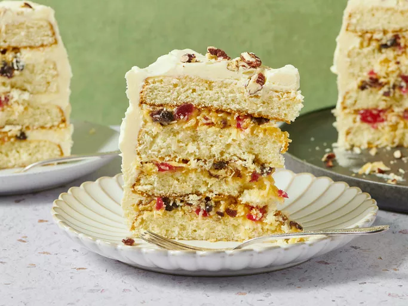

Lane Cake

Description
This recipe yields a delicious layer cake featuring a rich filling of raisins, pecans,
cherries, coconut, and brandy essence.
Ingredients
- One cup of softened butter
- Two cups of white sugar
- One teaspoon of vanilla extract
- Three and a quarter cups of all-purpose flour
- One tablespoon of baking powder
- Three-quarters of a teaspoon of salt
- One cup of milk
- Whites from eight eggs
- Half a cup of butter
- One and a quarter cups of white sugar
- Eight egg yolks
- Half a cup of water
- One teaspoon of brandy flavoring
- One cup of chopped pecans
- One cup of raisins
- Half a cup of chopped candied cherries
- Half a cup of flaked coconut
Steps
- Preheat oven to 350 degrees F (175 degrees C) and prepare four 8-inch round cake pans by greasing and flouring them. Gather all necessary ingredients.
- Cream together 1 cup of butter or margarine, 2 cups of white sugar, and vanilla extract until the mixture is light and fluffy.
- Combine the flour, baking powder, and salt. Gradually add this dry mixture to the butter mixture in three additions, alternating with the milk in two additions, starting and ending with the flour.
- Beat the egg whites until they form stiff peaks. Gently fold these egg whites into the cake batter.
- Divide the batter evenly among the four prepared cake pans.
- Bake the cakes at 350 degrees F (175 degrees C) for approximately 25 minutes, or until a toothpick inserted into the center comes out clean. Let the cakes cool completely before proceeding.
- Prepare the Lane Cake Filling by combining 1/2 cup of butter or margarine and 1-1/4 cups of white sugar in the top of a double boiler, away from direct heat. Beat until smooth. Add the egg yolks and beat thoroughly. Stir in the water and brandy flavoring.
- Place the double boiler over boiling water and cook, stirring continuously, until the filling has thickened. Stir in the pecans, raisins, cherries, and coconut until well combined.
- Remove the filling from heat and let it cool completely before spreading it between the cooled cake layers. Frost the assembled cake with Seven Minute or Butter Frosting.
Home